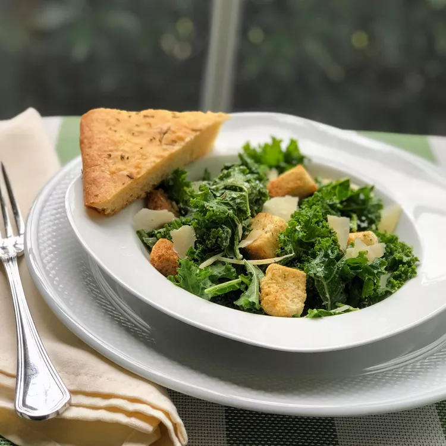

Smoothie recipe

This salad recipe isn't half bad. I think my wife made a better salad, but I'll never be able to try that again so this will have to cut it.
Traditional Caesar salad that uses kale instead of romaine! Makes 4 side-dish portions, but you can make it a main dish meal by topping it with a grilled protein, such as chicken or salmon! You may have leftover dressing, depending on how much you like. It keeps well in the refrigerator for up to a week.
Ingredients
- 1/2 cup mayonnaise
- 1 tablespoon freshly squeezed lemon juice
- 3 cloves, garlic minced
- 2 oil packed anchovy fillets
- 1 teaspoon Dijon Mustard
- 1 teaspoon Worcestershire sauce
- 1/2 teaspoon salt
- 1/4 teaspoon ground black pepper
- 1 bunch kale, ribs removed and leaves torn into pieces
- 1 cup Caesar salad croutons
Steps
- Place mayonnaise, lemon juice, garlic, anchovies, Dijon mustard, Worcestershire sauce, salt, and pepper in the bowl of a food processor. Process until smooth. Transfer to a small bowl and stir in grated Parmigiano-Reggiano cheese. Set aside.
- Place kale in a large salad bowl. Using your hands, massage the kale to soften slightly. Add a few dollops of the dressing on top of the kale, and stir until all pieces are lightly coated with the dressing. Sprinkle with croutons and top with shaved Parmigiano-Reggiano cheese.